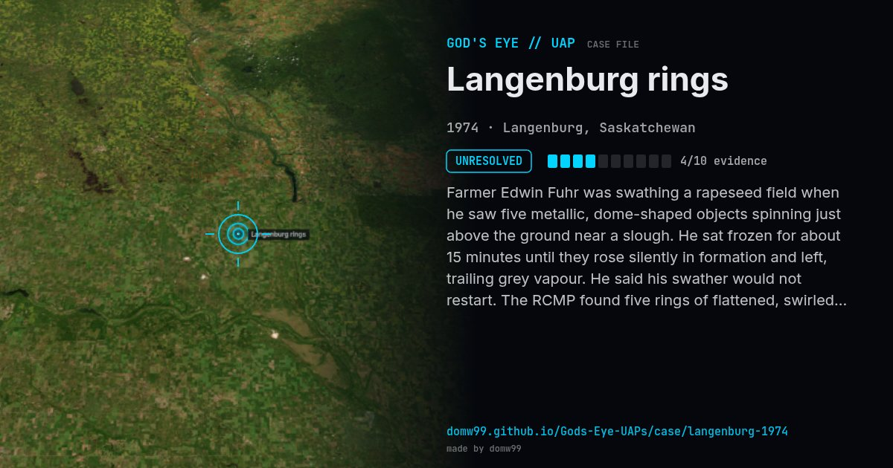

Langenburg rings
UNRESOLVED

Farmer Edwin Fuhr was swathing a rapeseed field when he saw five metallic, dome-shaped objects spinning just above the ground near a slough. He sat frozen for about 15 minutes until they rose silently in formation and left, trailing grey vapour. He said his swather would not restart. The RCMP found five rings of flattened, swirled crop matching his description, with no tracks leading in.
What was seen
Shape: Five domed discs
Witnesses: 1 (farmer Edwin Fuhr)
Duration: About 15 minutes
Sources
Browse
- Canada
- 1970s
- Unresolved
- Landing and trace cases
- Official government documents
- Physical traces
- Reported electromagnetic effects
- Discs and saucers